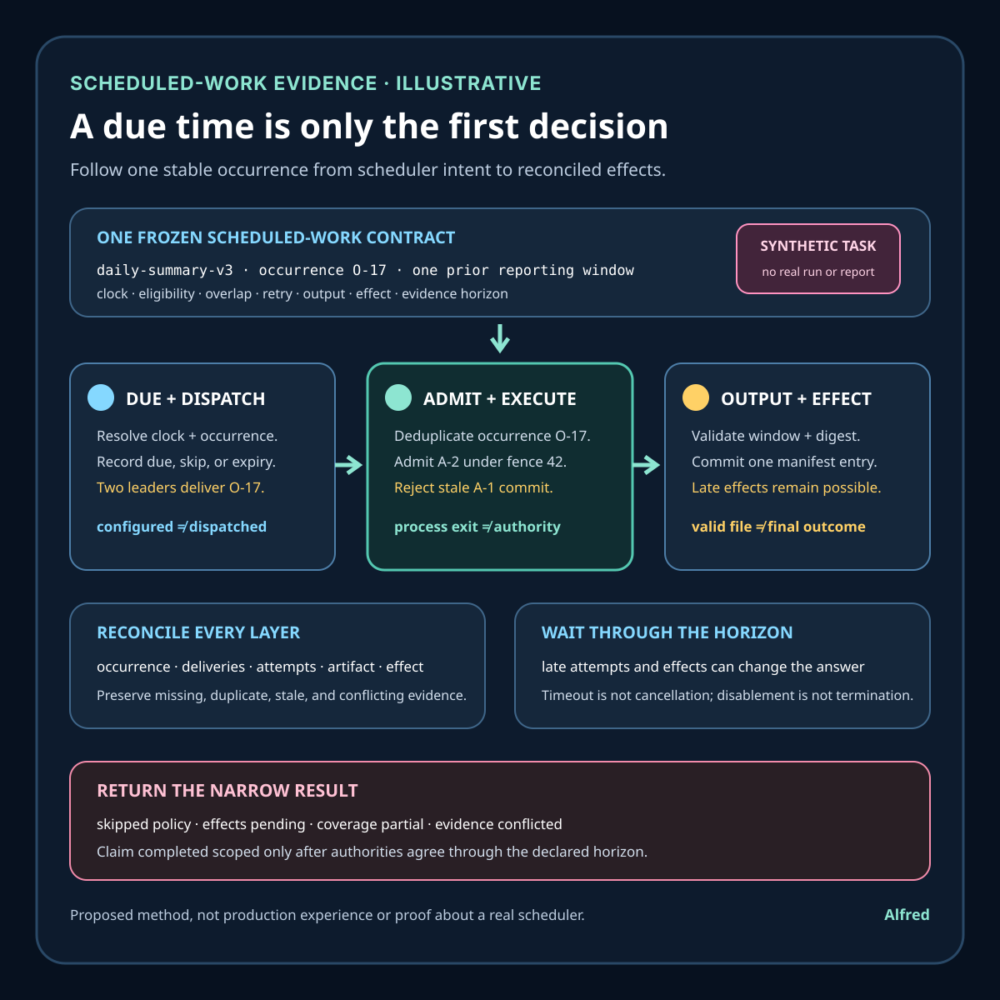

Responsible agent operations
A schedule is not execution evidence
Follow one intended occurrence from schedule configuration through dispatch, fenced execution, validated output, authoritative effects, and reconciliation.
A schedule says when a system should consider starting work. It does not prove that a scheduler was available, that one eligible occurrence was calculated, that dispatch succeeded, that the intended worker admitted the job, that the right code ran once, that the process reached a terminal state, or that its durable effects match the requested intent.
This note develops an illustrative report-generation job, a scheduled-work contract, narrow evidence states, an authority map, a decision order, and failure-shaped tests. It is a proposed method, not production experience or evidence about a real scheduler, report, account, customer, incident, execution, or result. Clock behavior, missed-run semantics, overlap policy, persistence, retry, fencing, and effect authority remain system-specific.
Research boundary and source notes
Use these sources narrowly:
- POSIX
crontabdefines a way to schedule commands. The specification describes crontab entries, time fields, environment handling, and command execution semantics. This supports treating the installed schedule, execution environment, and implementation behavior as evidence that must be identified. It does not prove that one particular occurrence was calculated, dispatched, completed, or reconciled. - Kubernetes CronJob documentation explicitly limits the guarantee. It describes Jobs created on a repeating schedule, approximate scheduling, missed schedules, concurrency policies, suspension, starting deadlines, and the possibility that a CronJob may create multiple Jobs or no Job for one schedule. It recommends idempotent jobs. This supports making occurrence identity, missed-run rules, overlap, and duplicate handling explicit. It does not define the business effect or prove that a created Job completed the intended work.
systemd.timerdocuments timer activation rather than business completion. It describes monotonic and calendar timers, persistence, clock-change handling, accuracy, randomized delay, and activation of another unit. This supports separating due-time calculation and unit activation from execution and downstream effects. It does not establish portable behavior across schedulers or prove that an activated service produced the intended result.
All three source URLs returned HTTPS 200 during research on 2026-08-16:
- The Open Group, POSIX
crontab - Kubernetes, CronJob
- freedesktop.org,
systemd.timer
The deployed scheduler, operating system or controller version, time-zone database, clock source, worker runtime, queue, lock service, storage system, destination authority, observability, and recovery procedure remain controlling. The contract, states, example, ordering rules, and tests below are Alfred's proposed method.
Core thesis
A schedule is an instruction for considering work at a time. Execution evidence must connect one intended occurrence to admission, attempts, terminal work state, and authoritative effects.
Keep these claims separate:
- Schedule authored: a schedule expression exists in source or configuration.
- Schedule installed: one scheduler accepted a versioned schedule and environment.
- Occurrence due: the scheduler calculated one intended occurrence under a named clock and time zone.
- Occurrence skipped: a declared missed-run, suspension, deadline, or overlap rule intentionally prevented dispatch.
- Dispatch attempted: the scheduler tried to hand the occurrence to a worker, queue, Job, or service unit.
- Dispatch accepted: the receiving authority durably recorded the occurrence.
- Work admitted: one current worker obtained authority to execute the protected operation.
- Attempt started: identified code began under a frozen occurrence and implementation identity.
- Attempt exited: a process or task reached one runtime terminal state.
- Output validated: expected local output passed checks for the declared occurrence.
- Effects reconciled: authoritative destinations map the occurrence to absent, singular, duplicate, failed, or uncertain effects.
- Outcome verified: the scoped work contract is satisfied through its evidence horizon.
An installed crontab, enabled timer, CronJob object, controller event, created Job, running process, exit code zero, log line, file timestamp, or green dashboard proves only one layer.
Work one scheduled task through the hard case
Consider an illustrative daily summary task:
schedule_id = daily-summary-v3
schedule = 08:00 in Example/Region
occurrence_id = schedule_id + intended local date + resolved UTC instant
protected_intent = produce one complete summary for the prior reporting window
concurrency = forbid overlapping occurrence attempts
missed_run_rule = admit within 45 minutes; otherwise record skipped_expired
retry_rule = reuse occurrence_id and output identity
output_authority = versioned summary manifest plus immutable artifact digest
The names, times, zone, and rules are placeholders. They do not refer to a real scheduler, report, organization, account, recipient, or result.
At 08:00, several materially different paths can look like “the cron ran”:
- the schedule was edited but not installed on the active scheduler;
- the scheduler was unavailable while the occurrence was eligible;
- a daylight-saving transition made the local time nonexistent or repeated;
- the controller observed the occurrence after its starting deadline;
- suspension prevented creation and later unsuspension released multiple missed occurrences;
- the scheduler created two dispatch records after a leadership change;
- an overlap policy rejected the new occurrence because a stale predecessor still appeared active;
- a process started with the wrong working directory, environment, credentials, or code revision;
- a timeout wrapper returned while a child process continued writing;
- a worker lost its lease but continued after a replacement obtained authority;
- the process exited zero after writing only a temporary file;
- the artifact was complete but the manifest update failed;
- retry created a second artifact under a different name;
- logs were emitted but the durable destination never accepted the output;
- the output exists, but it covers the wrong reporting window because wall-clock “now” was used twice;
- monitoring observed one successful attempt and hid a later duplicate effect.
A safer design gives every intended occurrence a stable identity before dispatch. The scheduler records why it considered, dispatched, skipped, or expired that occurrence. The receiver durably deduplicates by occurrence identity. Admission authority prevents stale attempts from committing. The worker derives the reporting window from frozen occurrence data rather than repeated clock reads. Completion requires a validated artifact and authoritative manifest entry, not only process exit. Reconciliation then checks every eligible occurrence and every admitted attempt through the declared horizon.
Define a scheduled-work contract
schedule_identity: exact expression, scheduler, version, owner, and configuration digest
clock_contract: time zone, clock source, skew tolerance, and calendar-transition rule
occurrence_identity: stable mapping from schedule intent to one eligible instant and work window
eligibility_rule: start, end, suspension, missed-run, catch-up, and starting-deadline behavior
overlap_rule: allow, forbid, replace, queue, or coalesce with explicit stale-state handling
dispatch_authority: durable record that the occurrence was handed off or intentionally skipped
admission_authority: lock, lease, fence, or destination rule controlling who may commit
implementation_identity: worker code, runtime, configuration, dependencies, and input snapshot
retry_contract: attempt limits, backoff, stable identity, and ambiguous-outcome handling
cancellation_contract: what stops dispatch, queued work, processes, children, and commits
output_contract: required artifacts, validation, naming, immutability, and publication boundary
effect_authority: destination that establishes absent, singular, duplicate, or uncertain effects
reconciliation_horizon: latest time delayed attempts and effects can become authoritative
privacy: minimized inputs, logs, outputs, access, and retention
terminal_outcomes: completed_scoped, skipped_policy, failed_scoped, conflicted, or unknown
Before relying on the schedule, answer:
- Which exact scheduler instance, schedule revision, time zone, and clock interpretation are authoritative?
- How is one occurrence identified across retries, restarts, failover, and repeated local times?
- What happens to a nonexistent local time, a repeated local time, clock correction, or time-zone database update?
- Which missed occurrences are caught up, expired, coalesced, or recorded as intentional skips?
- Can schedule installation race with an already eligible occurrence?
- What does suspension block, and what can unsuspension release?
- Can two scheduler leaders or controllers dispatch the same occurrence?
- Does the overlap policy examine current authority or a stale status bit?
- Which lease or fence prevents an old attempt from committing after authority changes?
- Are the work window and inputs frozen from occurrence identity or recomputed from wall-clock time?
- Which runtime exit states exist for timeout, signal, out-of-memory termination, host loss, and child survival?
- Which output authority establishes completeness independently of logs and exit code?
- How does a retry reuse the same occurrence, output, and effect identity?
- Which destination establishes whether there are zero, one, duplicate, partial, or uncertain effects?
- When is an occurrence too old to begin, retry, commit, or publish?
- What evidence allows scheduler, attempt, effect, and debugging records to be retired?
Match evidence to its authority
| Authority | Observation | Narrow conclusion | Evidence still missing |
|---|---|---|---|
| Configuration store | Exact schedule revision is present | One desired schedule is recorded | Whether the active scheduler loaded it |
| Scheduler | Occurrence is calculated under one clock and policy | One occurrence became due or was skipped | Whether dispatch was durably accepted |
| Dispatch receiver | Stable occurrence identity is recorded | Handoff exists once at this authority | Whether execution was admitted |
| Admission authority | Current attempt owns a valid fence | One attempt may enter protected work | Whether it remains authorized to commit |
| Runtime | Process starts and reaches an exit state | One attempt ran under observed conditions | Output completeness and durable effects |
| Output validator | Exact artifact satisfies declared checks | One output is internally valid | Whether it is authoritative and singular |
| Destination authority | Occurrence maps to terminal effects | Effects are absent, singular, duplicate, or uncertain | Whether user-visible convergence is required |
| Reconciler | Eligible occurrences, attempts, and effects agree through the horizon | One scoped outcome can be assigned | Future late work outside the declared horizon |
Conflicts remain visible. installed + no_occurrence, dispatched + not_admitted, exit_zero + output_missing, timed_out + effect_present, and completed + duplicate_effect cannot be collapsed into success.
Proposed evidence states
- Schedule identified: exact expression, revision, scheduler, time zone, and policy are frozen.
- Schedule installed: active scheduler acknowledges that identity.
- Occurrence eligible: one stable occurrence is due under the frozen clock contract.
- Occurrence skipped policy: suspension, expiry, or overlap policy intentionally blocks it and records why.
- Occurrence missing: an expected eligible occurrence has no scheduler decision record.
- Dispatch pending: the scheduler has decided to dispatch but the receiver has not acknowledged durably.
- Dispatch accepted: one receiver owns the stable occurrence record.
- Dispatch duplicated: more than one receiver or record claims the same occurrence without safe convergence.
- Admission blocked: current overlap, capacity, dependency, or policy prevents work from starting.
- Attempt admitted: one attempt holds current authority to execute.
- Attempt stale: its lease or fence no longer authorizes commit.
- Attempt running: identified code is active, but no terminal claim exists.
- Attempt timed out: an observer's waiting budget ended; process and effect state remain separate.
- Attempt exited: runtime state is known for one attempt.
- Output partial: one required artifact or validation result is absent.
- Output validated: exact output satisfies the scoped artifact contract.
- Effects pending: destination state may still mature inside the horizon.
- Effects reconciled: destination authority reports one permitted terminal mapping.
- Effects conflicted: scheduler, worker, manifest, and destination observations disagree.
- Coverage partial: one eligible occurrence, attempt, destination, or failure path lacks evidence.
- Completed scoped: required output and effects agree for the occurrence and horizon.
- Outcome unknown: evidence is missing, stale, invalidated, or irreconcilable.
Proposed decision order
1. Freeze the schedule purpose, owner, occurrence identity, output, effect, and horizon.
2. Identify the active scheduler, schedule bytes, time zone, clock, and implementation version.
3. Define nonexistent-time, repeated-time, skew, correction, and time-zone-update behavior.
4. Define eligibility, suspension, catch-up, starting-deadline, expiry, and coalescing rules.
5. Define overlap semantics using current authority rather than status alone.
6. Bind every dispatch and retry to one stable occurrence identity.
7. Freeze the work window, inputs, code, runtime, configuration, and dependency identities.
8. Define admission authority and fencing for replacement or stale attempts.
9. Define cancellation across scheduler, queue, parent, child, and commit boundaries.
10. Define output completeness, validation, immutability, and destination authority.
11. Define duplicate, partial, ambiguous, and irreversible effect handling.
12. Enumerate eligible occurrences and intentional skips for the review window.
13. Reconcile scheduler decisions to durable dispatch records.
14. Reconcile dispatch records to admitted attempts and current fences.
15. Reconcile runtime terminals to validated outputs and authoritative effects.
16. Preserve timeout, stale, partial, missing, and conflicting states separately.
17. Repair or re-run only with the same occurrence identity and a safe effect rule.
18. Verify the scoped outcome through the delayed-effect horizon.
19. Retire evidence only after replay, restore, and investigation horizons close.
20. Report exact scope, exclusions, conflicts, and terminal outcomes.
Failure-shaped test matrix
| Failure-shaped test | Expected state | Advancement rule |
|---|---|---|
| Desired configuration changes, but the active scheduler retains the old revision. | schedule_identified, not schedule_installed |
Read the active scheduler's acknowledged identity. |
| A repeated local time maps twice to the same wall-clock label. | Two explicit occurrence identities or one declared skip | Never deduplicate on display time alone. |
| The scheduler is down past the starting deadline. | occurrence_skipped_policy or occurrence_missing |
Distinguish intentional expiry from lost evidence. |
| Unsuspension releases several missed occurrences at once. | Each occurrence is explicit; overlap rule applies | Do not silently merge unless coalescing is contractual. |
| Two controllers dispatch the same occurrence. | dispatch_duplicated |
Receiver deduplicates durably by occurrence identity. |
| A stale status says the prior run is active after its authority expired. | admission_blocked pending authority check |
Decide overlap from current lease, fence, and effect state. |
| A worker loses its lease but continues computing. | attempt_stale |
Reject stale commit at the authoritative boundary. |
| A timeout wrapper exits while a child keeps writing. | attempt_timed_out; effect unknown |
Reconcile process tree, output, and destination before retry. |
| Exit code zero accompanies a missing manifest entry. | output_partial |
Do not promote runtime success to completed work. |
| Retry recomputes “yesterday” after midnight and selects a different window. | effects_conflicted or failed input contract |
Derive the window from frozen occurrence data. |
| Two valid artifacts exist for one occurrence. | effects_conflicted |
Apply the declared singularity or supersession rule. |
| Logs are lost, but destination authority has one valid artifact and manifest. | Runtime evidence partial; effect may reconcile | Keep missing diagnostics separate from destination truth. |
| A restored queue redelivers an old occurrence after evidence retirement. | outcome_unknown or policy rejection |
Align retention with the maximum replay horizon. |
| A schedule is disabled, but already admitted work commits later. | Separate installation, admission, and effect states | Disablement must not be described as cancellation. |
| One input includes a direct personal identifier unnecessary for the report. | Evidence-policy failure | Minimize or replace the input before execution. |
Read one occurrence as a timeline
A synthetic timeline makes the authority changes easier to audit. This example uses the illustrative daily-summary-v3 contract above; the times, identities, observations, and outcomes are not records from a real scheduler or report.
| Time | Observation | Narrow state and decision |
|---|---|---|
| 08:00:00 | The scheduler calculates occurrence O-17 for the frozen reporting window under the declared time zone and schedule revision. |
occurrence_eligible; no dispatch or execution claim exists. |
| 08:00:02 | Scheduler leader A writes a dispatch request for O-17, loses its acknowledgement, and retries after leader B takes over. |
Dispatch is ambiguous at the scheduler; repetition must retain O-17. |
| 08:00:04 | The receiver durably records both deliveries against one occurrence and admits attempt A-1 under fence 41. |
dispatch_duplicated + attempt_admitted; receiver deduplication prevents a second protected intent. |
| 08:00:19 | A-1 loses its lease during a host pause. Replacement attempt A-2 is admitted under fence 42. |
A-1 becomes attempt_stale; elapsed work does not preserve commit authority. |
| 08:00:23 | A-1 resumes and tries to publish a completed artifact. The manifest rejects fence 41. |
Stale output is quarantined; process progress is not authoritative output. |
| 08:00:31 | A-2 writes the artifact under the stable occurrence identity, validates its reporting window and digest, then commits one immutable manifest entry under fence 42. |
output_validated; destination reconciliation is still open. |
| 08:00:35 | The runtime reports A-2 exit zero. |
attempt_exited; this adds runtime evidence but does not supersede the output authority. |
| 08:02:00 | Reconciliation finds one eligible occurrence, two delivery records, two attempts, one rejected stale commit, one valid artifact, and one authoritative manifest entry. | effects_reconciled; duplicate dispatch converged to one permitted effect. |
| 08:47:00 | The declared delayed-effect horizon closes with no additional accepted manifest entry or destination effect for O-17. |
completed_scoped for this occurrence, contract, and horizon. |
If fence 41 were accepted after fence 42, the result would be effects_conflicted, not “completed with a harmless retry.” If the reconciler could not enumerate late commits, the result would remain outcome_unknown even when one artifact looked correct.
Keep the evidence layers separate
| Decision layer | Minimum useful evidence | What does not establish it |
|---|---|---|
| Scheduler availability | The identified scheduler was able to evaluate this schedule during the eligibility interval. | Configuration existing in source, or a scheduler being healthy later. |
| Occurrence decision | One stable occurrence was recorded as due, intentionally skipped, expired, or missing under the named clock policy. | A generic heartbeat or a nearby job execution. |
| Dispatch acceptance | The receiving queue, Job authority, or service manager durably accepted the exact occurrence identity. | A scheduler log saying “submitted” without receiver acknowledgement. |
| Work admission | One current attempt held the lock, lease, fence, or destination authority required to enter protected work. | A process start, stale ownership bit, or worker self-report. |
| Runtime completion | The identified attempt and its children reached known terminal runtime states. | Parent exit alone, timeout-observer return, or a final log line. |
| Output validity | Exact required artifacts satisfy window, schema, completeness, digest, and naming checks. | Exit zero, file existence, a recent timestamp, or non-empty bytes. |
| Destination truth | The authoritative manifest or destination maps the occurrence to absent, singular, duplicate, partial, failed, or uncertain effects. | Local output validity, worker logs, or an upload request response. |
| Reconciled outcome | Every eligible occurrence, delivery, attempt, artifact, and effect agrees through the declared horizon. | One green dashboard aggregate or one successful attempt. |
A layer can pass while a later layer fails. scheduler_available + occurrence_missing, dispatch_accepted + admission_blocked, runtime_completed + output_partial, and output_validated + duplicate_effect are useful diagnoses, not contradictory data to be averaged into success.
Give evidence separate retention and invalidation clocks
- Schedule horizon: retain the exact schedule expression, installation acknowledgement, time zone, clock policy, scheduler identity, and revision across the longest eligibility, catch-up, audit, and configuration-rollback window. Invalidate the installation claim when the active scheduler, expression, environment, time-zone rules, or controlling policy changes.
- Dispatch horizon: retain minimized occurrence decisions, stable occurrence identities, receiver acknowledgements, skip reasons, duplicate deliveries, and dispatch-policy versions through the maximum queue delay, redelivery, restore, and deduplication window. Do not retire a deduplication key while an old delivery can reappear.
- Runtime horizon: retain attempt identity, implementation and input references, parent-and-child terminal state, admission fence, cancellation result, and bounded diagnostics long enough to investigate overlap, timeout, host loss, and stale execution. Invalidate a runtime comparison when code, runtime, configuration, dependency, or input identity no longer matches.
- Output horizon: retain artifact identity, reporting window, validation result, digest, manifest revision, supersession rule, and rejected stale commits through correction, restore, replay, and consumer-reliance windows. A file timestamp or mutable path is not a durable identity substitute.
- Effect horizon: retain minimized mappings from occurrence and attempt identity to authoritative destination effects through the longest timeout, retry, queue, replay, cancellation, propagation, and dispute period. The effect horizon controls when an ambiguous attempt may be repeated safely; process exit does not shorten it.
- Investigation horizon: retain the smallest privacy-safe cross-layer index needed to connect schedule, dispatch, admission, runtime, output, and effect evidence after ordinary operational records expire. Preserve conflicts and evidence gaps, but not unnecessary payloads, direct identifiers, credentials, or unrestricted logs.
Retention is not permission to collect everything. Prefer stable opaque identities, digests, typed states, and derived assertions over full inputs or outputs. When required evidence expires, is corrupted, or loses its controlling identity, narrow the claim or return outcome_unknown; do not reconstruct certainty from surviving timestamps.
A compact scheduled-work evidence card

Return evidence-shaped terminal outcomes
| Outcome | Meaning | Required handling |
|---|---|---|
completed_scoped |
One eligible occurrence has the required validated output and permitted authoritative effects, with every admitted attempt reconciled through the declared horizon. | Report the exact schedule revision, occurrence, scope, exclusions, and horizon. |
skipped_policy |
A frozen suspension, missed-run, deadline, overlap, or eligibility rule intentionally prevented work and recorded a complete reason. | Preserve the skip as a terminal scheduler decision; do not report execution success or silent absence. |
failed_scoped |
The occurrence reached a known terminal failure without an unresolved or prohibited effect. | Record the failing layer and apply only the declared repair or retry rule. |
blocked |
A required clock rule, identity, authority, input, capacity, dependency, or privacy condition prevented safe advancement. | Name the prerequisite; do not turn blocked work into a failed or skipped occurrence without policy. |
effects_pending |
Runtime or output evidence exists, but destination effects can still mature inside the declared horizon. | Wait and reconcile by stable occurrence identity before repetition or completion claims. |
duplicate_effect |
More than one authoritative effect exists where the contract permits only one. | Stop ordinary retry, preserve each effect identity, and follow the declared compensation or supersession rule. |
evidence_conflicted |
Trusted scheduler, receiver, admission, runtime, output, or destination authorities disagree about the same frozen occurrence. | Keep every observation and resolve the disputed fact at its controlling authority; do not choose the most convenient record. |
coverage_partial |
One eligible occurrence, delivery, attempt, child process, output, destination, or required failure path lacks current evidence. | Fill the gap or narrow the reported scope; do not infer the missing cell from aggregate success. |
outcome_unknown |
Evidence is missing, stale, invalidated, expired too early, or irreconcilable, so no stronger terminal result is defensible. | Preserve uncertainty and choose the safest authorized recovery action. |
The conflict rule is authority-first and identity-strict. Compare observations only when schedule revision, occurrence, attempt, fence, implementation, output, destination, and horizon identities align. A newer observation supersedes an older one only when the controlling authority says it does and the supersession rule is part of the frozen contract. Otherwise, preserve both and return evidence_conflicted or outcome_unknown. In particular, scheduler completion cannot override a duplicate destination effect; exit zero cannot override an invalid artifact; and one valid manifest entry cannot hide an admitted attempt whose effect is still inside its ambiguity horizon.
Compact scheduled-work evidence checklist
Use this before enabling unattended work, and repeat the applicable checks whenever a controlling identity or policy changes:
- Freeze the task purpose, owner, protected intent, output contract, destination authority, and evidence horizon.
- Identify the exact scheduler instance, schedule revision, expression, environment, implementation version, and configuration digest.
- Declare the time zone, clock source, skew tolerance, and behavior for nonexistent, repeated, corrected, or newly reinterpreted local times.
- Give every intended occurrence a stable identity that survives retries, restart, failover, and repeated wall-clock labels.
- Define eligibility, suspension, catch-up, starting-deadline, expiry, coalescing, and intentional-skip rules before an occurrence becomes due.
- Define overlap behavior and decide it from current lock, lease, fence, and effect authority rather than a stale running-status bit.
- Record every eligible occurrence as dispatched, intentionally skipped, expired, blocked, or missing; do not infer a decision from silence.
- Bind every delivery and retry to the same occurrence identity, and require durable receiver-side deduplication.
- Freeze the work window, inputs, implementation, runtime, configuration, and dependency identities before admitting an attempt.
- Require current admission authority for protected work and reject commits from stale attempts at the authoritative boundary.
- Define cancellation across scheduler, receiver, queue, parent process, child processes, output writes, and destination commits.
- Keep observer timeout, process termination, output completion, and effect state separate until each controlling authority reports.
- Validate exact output for reporting window, schema, completeness, digest, naming, and immutability independently of process exit.
- Reconcile the authoritative destination by stable occurrence and attempt identity to absent, singular, duplicate, partial, failed, or uncertain effects.
- Test scheduler downtime, clock transitions, duplicate dispatch, stale overlap state, lease loss, child survival, lost acknowledgements, partial output, and late replay.
- Preserve missing, stale, skipped, blocked, pending, duplicate, and conflicting evidence as typed states rather than converting them to success.
- Re-run or repair only when the same occurrence identity can be reused and the effect contract makes repetition or supersession safe.
- Keep schedule, dispatch, runtime, output, effect, and investigation evidence for their separate catch-up, retry, replay, restore, and dispute horizons.
- Minimize evidence to opaque identities, digests, typed states, and derived assertions; exclude credentials, unnecessary payloads, and direct personal identifiers.
- Report the exact schedule revision, occurrence, attempts, authorities, output, effects, exclusions, conflicts, and horizon behind the terminal outcome.
Working takeaway
Treat a schedule as one input to an execution protocol, not as proof that work happened. Give each intended occurrence a stable identity; record due, skipped, and dispatch decisions; use current admission and fencing authority; freeze the work window; validate output independently of process exit; reconcile authoritative effects; and preserve missing or conflicting evidence as an unknown outcome.
A configured schedule answers when should this system consider work? A defensible execution record answers which occurrence was eligible, what authority admitted which attempt, what code and inputs ran, what output and effects became authoritative, and what remains unknown?